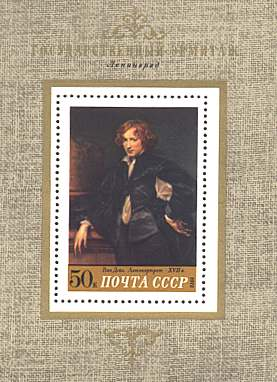
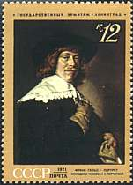
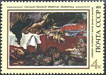
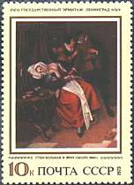
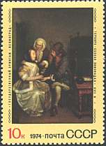

|
|
Flemish Paintings Collection
|
Short biographical data on old Flemish masters whose works are displayed in the Hermitage Museum ( Point on the stamps with the mouse index for more information about the works of art displayed and about the stamps). |
|
Dyck, Sir Anthony van (1599-1641),
Flemish painter, who was one of the most important and prolific portraitists
of the 17th century and one of the most brilliant colorists in the history
of art. In his portraits of Italian aristocrats—frequently of men on prancing horses or ladies in black gowns—he created idealized figures with proud, erect stances, slender figures, and the famous expressive “van Dyck” hands. Influenced by the great Venetian painters Titian, Paolo Veronese, and Giovanni Bellini, he adopted colors of great richness and jewel-like purity. No other painter of the age surpassed van Dyck in capturing the shimmering whites of satin, the smooth blues of silk, or the rich crimsons of velvet. He was the quintessential painter of aristocracy, and was particularly successful in Genoa. Van Dyck painted most of the English aristocracy of the time, and his style became lighter and more luminous, with thinner paint and more sparkling highlights in gold and silver. Van Dyck was one of the most influential 17th-century painters. He set a new style for Flemish art and founded the English school of painting; the portraitists Sir Joshua Reynolds and Thomas Gainsborough of that school were his artistic heirs. He died in London on December 9, 1641. |
 |
|
 |
Hals, Frans (c. 1580-1666), Dutch painter, one of the greatest masters of the art of portraiture, much admired for his brilliant lighting effects and the freedom of his brushwork. In all his portraits Hals achieved an air of complete spontaneity; his subjects give the impression of being caught in a fleeting, but characteristic, pose and expression. Although his portraits appear spontaneous and uncalculated, Hals was an expert technician, and his studies are always skilfully composed. In his group portraits Hals demonstrates the ability to catch each man in a characteristic pose, thus giving the group an air of informality and naturalness; each individual is clearly portrayed, yet all are linked in a well-balanced pattern in line and color. |
| Snyders, Frans (1579-1657), Flemish painter, born in Antwerp. One of his teachers was Pieter Brueghel the Younger. After making his reputation as a painter of flower and fruit still lives, Snyders became a master of animal painting and did notable canvases of hunting scenes and animals in combat. Snyders worked as an assistant in the studios of Peter Paul Rubens and Jacob Jordaens painting animals in large works. |
 |
|
 |
Steen, Jan Havickszoon (1626-1679), Dutch painter, who is especially noted for genre scenes. He was born in Leiden and educated at the University of Leiden. He is believed to have studied painting first in Utrecht with the German artist Nicolaus Knupfer, then in The Hague with the Dutch artist Jan van Goyen, whose daughter he married in 1649. Steen lived at The Hague until 1654, when he moved to Delft and, according to tradition, adopted his father's occupation of brewer.He was a prolific painter, particularly of lively tavern scenes and of children, although he painted landscapes, portraits, and religious works as well. |
| Terborch, Gerard (1617-1681), Dutch painter, born in Zwolle, the son of a painter. He went to England in 1635, to Italy in 1640, and in 1648 to Münster, Westphalia, where he painted his celebrated Swearing of the Oath of the Peace Treaty between the Dutch and Spanish at Münster (1648, National Gallery, London), which granted Dutch independence from Spain and brought the Eighty Years' War to a close. He worked in the realistic tradition of Frans Hals, Jan Vermeer, and other Dutch painters, with careful attention to lighting and to the rendering of fabric. |  |
Links:
-
Other Flemish Paintings on this site: Rembrandt, Rubens-1, Rubens-2, Vermeer, Van Gogh
-
Hermitage Museum
| Published:
04/19/2000. Revised:
03/19/02. Copyright © 2000 by Victor Manta, Switzerland. All rights reserved worldwide. |
|